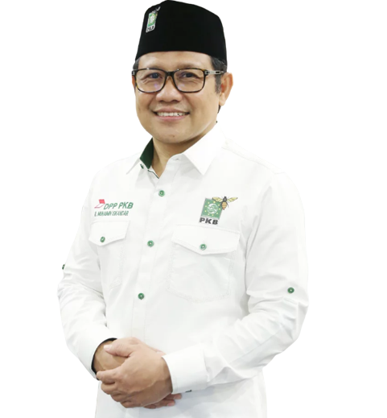

Berikut merupakan bunyi Visi dan Misi yang diusung oleh pasangan Anies - Cak Imin
Indonesia Adil Makmur untuk Semua
Indonesia yang makmur menjadikan kemiskinan dan ketimpangan sebagai masa lalu. Kemakmuran ditandai oleh layanan publik yang terjangkau dan berkualitas bagi setiap warga negara, mulai dari kesehatan, pendidikan, perubahan, pangan, transportasi, energi, dan informasi.
8 Jalan Perubahan
Memastikan Ketersediaan Kebutuhan Pokok dan Biaya Hidup Murah melalui Kemandirian Pangan, Ketahanan Energi, dan Kedaulatan Air.
Mengentaskan Kemiskinan dengan Memperluas Kesempatan Berusaha dan Menciptakan Lapangan Kerja, Mewujudkan Upah Berkeadilan, Menjamin Kemajuan Ekonomi Berbasis Kemandirian dan Pemerataan, serta Mendukung Korporasi Indonesia Berhasil di Negeri Sendiri dan Bertumbuh di Kancah Global.
Mewujudkan Keadilan Ekologis Berkelanjutan untuk Generasi Mendatang.
Membangun Kota dan Desa Berbasis Kawasan yang Manusiawi, Berkeadilan dan Saling Memajukan.
Mewujudkan Manusia Indonesia yang Sehat, Cerdas, Produktif, Berakhlak, serta Berbudaya.
Mewujudkan Keluarga Indonesia yang Sejahtera dan Bahagia sebagai Akar Kekuatan Bangsa.
Memperkuat Sistem Pertahanan dan Keamanan Negara, serta Meningkatkan Peran dan Kepemimpinan Indonesia dalam Kancah Politik Global untuk Mewujudkan Kepentingan Nasional dan Perdamaian Dunia.
Memulihkan Kualitas Demokrasi, Menegakkan Hukum dan HAM, Memberantas Korupsi Tanpa Tebang Pilih, serta Menyelenggarakan Pemerintahan yang Berpihak pada Rakyat.
Partai Koalisi
Koalisi Terkini Partai Pendukung Kami
Amati partai politik di parlemen yang kini sudah melabuhkan arah dukungan kepada pasangan Anies - Cak Imin.
Anies Baswedan lahir pada tanggal 7 Mei tahun 1969 di Kuningan, Jawa Barat. Ayahnya bernama Rasyid Baswedan yang berprofesi sebagai dosen Fakultas Ekonomi di Universitas Islam Indonesia. Anies merupakan cucu dari H. Abdurrahman Baswedan atau dikenal dengan nama A. R. Baswedan. Kakeknya Anies merupakan pahlawan nasional dan dikenal sebagai seorang nasionalis, jurnalis, pejuang Kemerdekaan Indonesia, diplomat, mubaligh, dan sastrawan Indonesia.
Riwayat
Riwayat Karir Capres
Anies Baswedan memiliki karir yang cemerlang sejak usia mudanya. Berikut merupakan perjalanan karir dari Anies Baswedan
1989 - 1991
Redaktur dan Pembawa Acara "Tanah Merdeka" (Program TVRI Yogyakarta)
1993 - 1994
Program Koordinator di Center for Student and Community Development
1994 - 1996
Peneliti dan Koordinator Proyek di Pusat antar Universitas (PAU) Studi Ekonomi UGM
2000 - 2004
Peneliti pada The Office of Research, Evaluation, and Policy Studies, Northern Illinois University
2000 - 2000
Peneliti pada Center for Governmental Studies, Northern Illinois University
2004 - 2005
Research Manager di IPC, Inc., Chicago, Illinois, Amerika
2005 - 2007
Peneliti Utama di The Indonesian Survei Institute (LSI), Jakarta
2005 - 2009
Direktur Riset The Indonesian Institute, Center for Public Policy Analysis, Jakarta
2006 - 2007
National Advisor Bidang Desentralisasi dan Otonomi Daerah pada Partnership for Governance Reform, Jakarta
2007 - 2011
Rektor Universitas Paramadina
2010
Pendiri dan Ketua Gerakan Indonesia Mengajar
2010
Presenter Program Save Our Nation, Metro TV
2010
Presenter Young Global Leaders Summit, Tanzania, Afrika
2014- 2016
Menteri Kebudayaan dan Pendidikan Dasar dan Menengah dalam Kabinet Kerja
2017 - 2022
Gubernur DKI Jakarta
Riwayat Pendidikan Anies Baswedan
S1. Fakultas Ekonomi UGM, Yogyakarta
S2. University of Maryland, School of Public Policy, College Park, Amerika Serikat S1. Fakultas Ekonomi UGM, Yogyakarta
S3. Northern Illinois University, Department of Political Science, DeKalb, Illinois, Amerika Serikat
About me
Profil Singkat Cawapres!
Abdul Muhaimin Iskandar lahir pada tanggal 24 September 1966 di Jombang Jawa Timur. Ia merupakan salah seorang politisi dan aktivis yang sangat peduli kepada perjuangan demokrasi. Dia sangat aktif sejak menjadi mahasiswa di UGM dan PMII dalam melawan otoritarianisme dan sentralisasi. Muhaimin sangat menyukai bidang jurnalis, bahkan pasca sarjananya mengambil program manajemen komunikasi di sebuah Universitas Negeri di Jakarta.

Riwayat
Riwayat Karir Cawapres
Muhaimin Iskandar memiliki riwayat karir baik itu di lingkungan non-politik dan politik. Berikut merupakan perjalanan karir dari Muhaimin Iskandar
1980 - 1983
Staf Pengajar Pesantren Denanyar Jombang
1992 - 1994
Kepala Divisi Penelitian LPU Jakarta
1994
Kepala Lembaga Penelitian & Pengembangan Tabloid Detik
1999
Ketua FPKB DPR RI
1999 - 2004
Anggota DPR RI
1999 - 2009
Wakil Ketua DPR RI
2002 - 2007
Ketua Dewan Tanfidziah DPP PKB
2004 - 2005
Sekretaris Jenderal DPP PKB
2009 - 2014
Menteri Tenaga Kerja dan Transmigrasi
2018 - 2019
Wakil Ketua MPR RI
2019 - Sekarang
Wakil Ketua DPR RI
2014 - Sekarang
Ketua Umum PKB
Riwayat Pendidikan Muhaimin Iskandar
Sarjana Politik, FISIP Universitas Gadjah Mada
Magister Komunikasi Universitas Indonesia
Doktor Honoris Causa Bidang Sosial Politik Universitas Airlangga